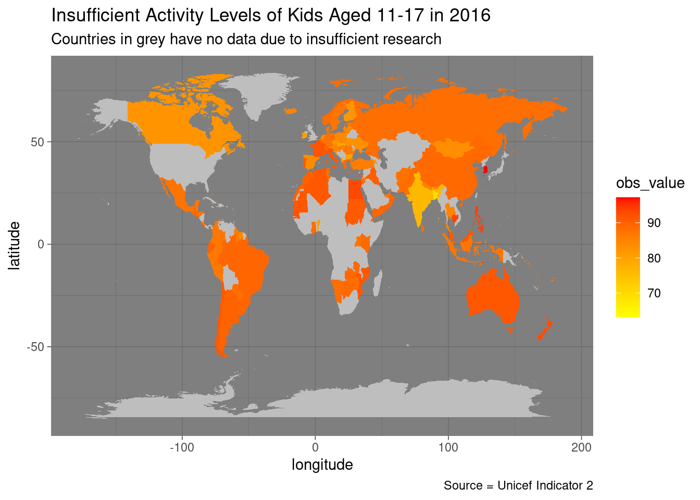
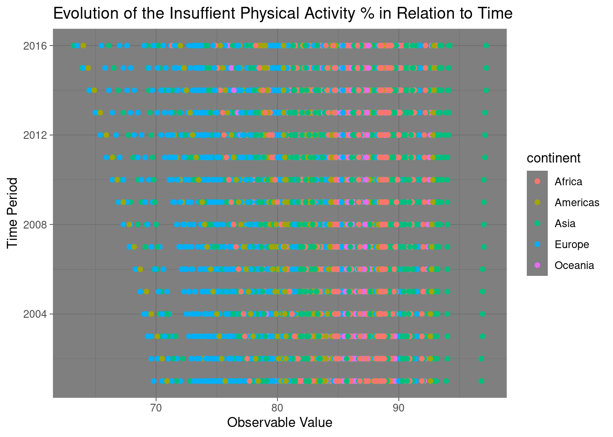
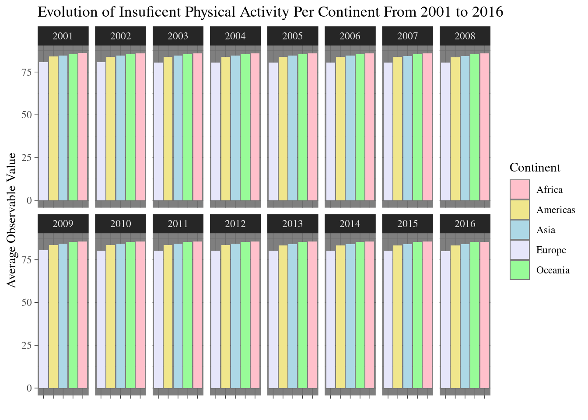

Active or Not?: Kids’ Dwindling Physical Activity Rates
Understanding Changing Rates of Physical Activity in School Going Children
Welcome to the Quarto Report based on relevant, recent data sourced by Unicef regarding the levels of insufficient physical activity among school-going children around the world. We live in a culturally rich, diverse, and intriguing world with ever-changing landscapes and norms. But from the below map, charts, and scatterplot, we’ll see how levels of physical activity for school children have changed over the years. It’s important to note that many factors outside of the given data, such as;
- war
- famine
- poverty,
- displacement
- political context
View of the Landscape of Data
We can view through the various countries the changing levels of insufficient activity among the children in the map. Some trends can be viewed, such that we see its higher levels of insufficient activity in the southern hemisphere countries. The contributing factors to this may include a multitude of aforementioned factors.
The timeseries here depicts how the disparity between the highest and lowest observable values contineus to increase. While in more Western regions it’s typical to see rates get lower, it seems that for countries in Asia and Africa, the rates continue to rise.
Future Projection of Kids’ Active Lifestyles


Conclusion and Suggestions
Looking at the average based off the given continents, we can see consistent themes across the charts depicting how little has changed. A cause for concern here is that it indicates external factors in the continents must be at fault, such as adequate capacity for education, and economic and political unrest. We can see the largest disparity occurs between Europe and Africa. This suggests that location and the surrounding living factors play a role in the levels of physical activity one partakes in.There are certain things these struggling areas could implement despite the obvious obstacles;
- Enhanced attendance at schools
- Implementation of physical education
- Meals in schools,
- Positive reward systems